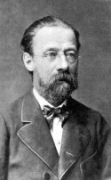

Бедржих Сметана – основоположник чешской музыкальной классики
| Бедржих Сме́тана (Bedřich Smetana) Годы жизни: 1824-1884 |
Творческая деятельноcть Сме́таны протекала в условиях национального возрождения Чехии. На протяжении нескольких столетий (с 1620 г.) эта страна входила в состав австрийской монархии на правах угнетенной нации. Отсюда – ее экономическая отсталость, запрещение родного языка, принижение чувства национального достоинства.
С конца XVIII века в Чехии развернулось движение «будителей» – чешских просветителей (ученых, писателей, общественных деятелей), которые боролись за возрождение национальной культуры. Благодаря их усилиям на рубеже XVIII-XIX веков были основаны кафедра чешского языка в Пражском университете, Пражская консерватория, Органная школа.
Протест против иноземного гнета достиг кульминации в Пражском восстании 1848 года, которое было жестоко подавлено. Политические репрессии, последовавшие за его разгромом, вынудили многих деятелей чешской культуры покинуть родину. В их числе был и Сметана, который с 56-61 гг. жил в Швеции, в Гётеборге. Здесь он организовал симфонический оркестр, с которым выступал в разных странах как дирижер и пианист.
Новая волна освободительного движения, способствовавшая подъему чешской культуры, начинается в 60х годах XIX века. Этот подъём неразрывно связан с деятельностью Сметаны. По складу личности он был ярко выраженным лидером, натурой необычайно деятельной, энергичной. Он всегда находился в самой гуще общественных событий. Не было такой области чешской музыкально-общественной жизни, в которой Сметана не принимал самого активного участия. Только за одно десятилетие – 60е годы XIX века – он открыл первую чешскую музыкальную школу; возглавил созданный по его инициативе «Временный театр», на сцене которого ставились спектакли на чешском языке; руководил музыкальной секцией в союзе деятелей чешской культуры «Умелецка беседа» и крупнейшим хоровым обществом «Глагол Пражский», для которого сочинил множество хоров; был организатором и дирижером симфонических и хоровых концертов.
Подобно Глинке в России, Сметана «заложил фундамент» национальной оперы и программной симфонической музыки.
Оперное творчество
Интерес композитора к оперному жанру был постоянным и это объясняется не только его творческими склонностями: Сметана прекрасно понимал, что именно опера способна ярче всего выразить национально-освободительные устремления чешского народа. Уже в первой своей опере – «Бранденбуржцы в Чехии» – он обращается к самой актуальной теме современности, теме освободительной борьбы. Сюжет из истории Чехии воскрешал события XIII века, когда на чешской земле хозяйничали немецкие феодалы, и прямо перекликался с борьбой против австрийской монархии, которую вели современники композитора.
От «Бранденбуржцев...» героическая линия в оперном творчестве идет к «Далибору», а затем к «Либуше». Наиболее яркая среди всех трех героических опер – «Далибор». Ее содержание остро драматично. Главный герой – благородный рыцарь, который возглавил антифеодальное крестьянское восстание и был казнен по приказу короля. В либретто переплетены реальные исторические факты и образы народных легенд. Отдельные моменты оперы напоминают «Фиделио» Бетховена (смелая девушка, переодевшись в мужское платье, пробирается в тюрьму, чтобы спасти возлюбленного). Однако, дело не только в сюжете: бетховенский свободолюбивый пафос ощущается в самой музыке оперы.
Наряду с героико-патриотическими операми Сметана сочинял и комические. Это «Проданная невеста», «Две вдовы», «Поцелуй», «Тайна». В них показана повседневная жизнь простых людей из народа. Лучшая среди комических опер Сметаны – «Проданная невеста» (1866 г.), которая стала первой чешской оперой, получившей мировое признание. Ее герои словно выхвачены из жизни чешского села: это батрак Еник – находчивый и смекалистый; его невеста нежная и лукавая Маженка; глуповатый и избалованный Вашек, самоуверенный деревенский сват Кецал; расчетливые родители Маженки, мечтающие о богатом зяте и др.
Одним из главных участников происходящих в опере событий является народ. Вместе с Маженкой крестьяне осуждают Еника за мнимое отступничество, а в финале оперы от всего сердца поздравляют влюбленную пару. Вот почему такое важное место в «Проданной невесте» занимают народно-массовые сцены. Ими начинаются и завершаются все три действия оперы.
Воплощая народные характеры, композитор естественно опирался на типичные особенности чешской народной музыки, в первую очередь – чешских танцев (это полька, скочна, фуриант). Так, например, в характере польки выдержан жизнерадостный хор «Как же нам не веселиться», открывающий I действие. Его мелодия звучит как подлинная народная песня[1].
Вокальный стиль «Проданной невесты» во многом напоминает стиль русской классической оперы своей опорой на народную песенность (при том, что цитат почти нет) и отказом от внешней виртуозности (примером может служить ариозо Еника – № 81).
В области симфонической музыки Сметана отдавал предпочтение жанру программной симфонической поэмы (видимо, благодаря влиянию Листа, с которым познакомился еще в молодые годы). Главное симфоническое произведение Сметаны – грандиозный цикл из 6 симфонических поэм "Моя Родина" («Вышеград», «Влтава», «Шарка», «В чешских лугах и лесах», «Табор», «Бланик»)[2].
Наибольшую популярность приобрела симфоническая поэма «Влтава», где тема Родины раскрывается через образ могучей реки. Как поясняется в авторской программе, музыка поэмы рисует весь путь Влтавы от самых ее истоков. Сочетание неизменного (образ реки) с изменчивым (картины и явления, сопутствующие течению Влтавы) вызвало обращение к форме свободного рондо
[1] В отличие от русского фольклора, в чешском почти нет широких протяжных мелодий. Большинство чешских песен имеет танцевальный характер, отличается бодрой жизнерадостностью.
[2] Цикл возник в первые годы глухоты (это страшное несчастье постигло композитора в 50-летнем возрасте), когда были созданы и другие замечательные произведения: струнный квартет «Из моей жизни», «Чешские танцы» для фортепиано.